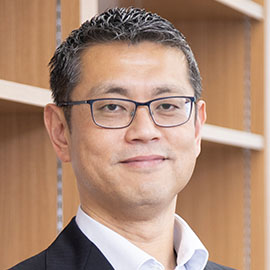

Fumiya Iida
Bio-Inspired Robotics Laboratory,
University of Tokyo and University of Cambridge
Talk Title: Distributed Tactile Intelligence for Bio-Inspired Soft Robots
Abstract: Soft robotics has advanced rapidly through the development of deformable functional materials, enabling capabilities such as adaptive locomotion, dexterous manipulation, self-healing, morphing, and mechanical growth. These innovations have broadened the applicability of robotic systems, particularly in environments that require compliance, robustness, and safe interaction with humans. However, the very properties that make soft robots powerful--their continuum nature and high-dimensional deformation--also introduce fundamental challenges in sensing, modeling, planning, and control. In this talk, I present a shift from centralized control toward distributed tactile intelligence, achieved through the tight integration of sensorized soft materials and data-driven methodologies. By embedding dense, multimodal sensing directly into soft bodies and leveraging machine learning for embodied signal processing, we enable localized perception-action loops that allow robots to interpret rich physical interactions and adapt their behavior in real time. This approach reframes the body itself as a computational resource, reducing reliance on explicit modeling and enabling more robust operation in uncertain, unstructured environments. I will highlight several projects from our laboratory that illustrate this paradigm, including soft systems for assistive technologies, adaptive manipulation, and autonomous operation under complex environmental conditions. These examples demonstrate how material-level sensing and distributed intelligence can unlock new functionalities that are difficult to achieve with conventional architectures. Looking forward, the convergence of soft materials, embedded sensing, and data-centric intelligence points toward a new generation of robotic systems that are inherently interactive, context-aware, and resilient--bringing us closer to the adaptive capabilities observed in biological organisms.
Biography: Fumiya Iida is a Professor at School of Engineering, the University of Tokyo, Professor of Robotics at the University of Cambridge, and the director of Bio-Inspired Robotics Laboratory. He received his bachelor and master degrees in mechanical engineering at Tokyo University of Science (Japan, 1999), and Dr. sc. nat. in Informatics at University of Zurich (2006). In 2004 and 2005, he was also engaged in biomechanics research of human locomotion at Locomotion Laboratory, University of Jena (Germany). From 2006 to 2009, he worked as a postdoctoral associate at the Computer Science and Artificial Intelligence Laboratory, Massachusetts Institute of Technology in USA. In 2006, he awarded the Fellowship for Prospective Researchers from the Swiss National Science Foundation, and in 2009, the Swiss National Science Foundation Professorship for an assistant professorship at ETH Zurich until 2015. He was also a Professor of Robotics at the University of Cambridge until 2025. He was a recipient of the IROS2016 Fukuda Young Professional Award, Royal Society Translation Award in 2017, Tokyo University of Science Award in 2021. His research interest includes biologically inspired robotics, embodied artificial intelligence, and biomechanics, where he was involved in a number of research projects related to dynamic legged locomotion, dextrous and adaptive manipulation, human-machine interactions, and evolutionary robotics.